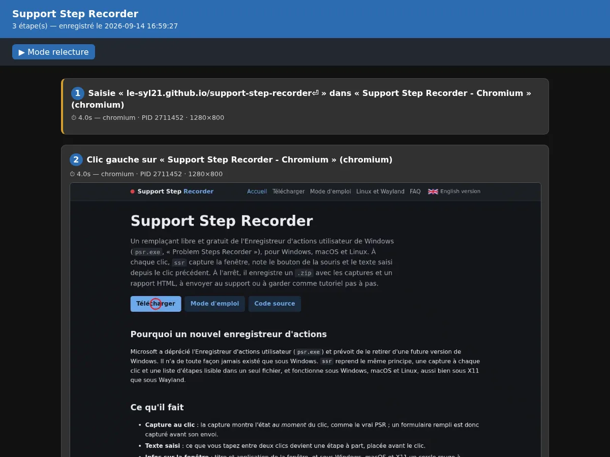

Support Step Recorder
Un remplaçant libre et gratuit de l'Enregistreur d'actions utilisateur de Windows
(psr.exe, « Problem Steps Recorder »), pour Windows, macOS et Linux. À chaque clic, ssr
capture la fenêtre, note le bouton de la souris et le texte saisi depuis le clic précédent. À l'arrêt, il
enregistre un .zip avec les captures et un rapport HTML, à envoyer au support ou à garder comme tutoriel
pas à pas.
Pourquoi un nouvel enregistreur d'actions
Microsoft a déprécié l'Enregistreur d'actions utilisateur (psr.exe) et prévoit de le retirer d'une
future version de Windows. Il n'a de toute façon jamais existé que sous Windows. ssr reprend le même
principe, une capture à chaque clic et une liste d'étapes lisible dans un seul fichier, et fonctionne sous Windows,
macOS et Linux, aussi bien sous X11 que sous Wayland.
Ce qu'il fait
- Capture au clic : la capture montre l'état au moment du clic, comme le vrai PSR ; un formulaire rempli est donc capturé avant son envoi.
- Texte saisi : ce que vous tapez entre deux clics devient une étape à part, placée avant le clic.
- Infos sur la fenêtre : titre et application de la fenêtre, et sous Windows, macOS et X11 un cercle rouge à l'endroit du clic.
- Compatible Wayland : capture d'écran via
xdg-desktop-portalet PipeWire (GNOME, KDE, wlroots…), avec une demande d'autorisation posée une fois puis mémorisée. Mise en place sous Linux et Wayland. - Fichiers légers : captures en WebP, et captures de fenêtre recadrées sur leur contenu, sans bandes noires.
- Ne bloque jamais : l'encodage des images et l'écriture sur le disque se font dans un thread à part, le clic reste instantané.
- Rapport HTML rejouable : mode relecture pas à pas, zoom au clic sur une capture, navigation au clavier.
- Interface en français et en anglais, choisie d'après la langue du système et modifiable avec le bouton
FR/EN.
Le rapport

Le .zip contient report.html, une image step-XXXX.webp par clic et un
fichier steps.json destiné aux outils. Détails dans le contenu du ZIP.
Systèmes
Enregistrer en trois étapes
- Cliquez sur Démarrer.
- Faites ce que vous voulez montrer : clics, saisies.
- Cliquez sur Arrêter, choisissez où enregistrer : le
.zipet son rapport HTML y sont écrits.
Questions, signalements de bugs, tests de versions bêta : Discord ou tickets GitHub.